1 · Welcome
Keep / light polish
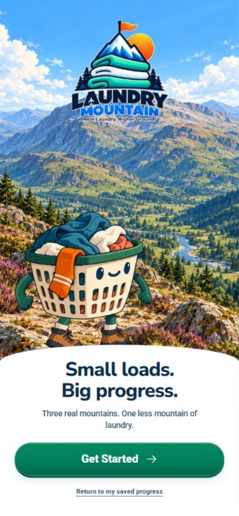
Strong scenic opening and recognisable mascot. Preserve the illustration direction. The repeated front-facing basket needs a deliberate welcome pose; adult wordmark remains a separate deferred task.
2 · Home · phone
Fix layout and shared elements
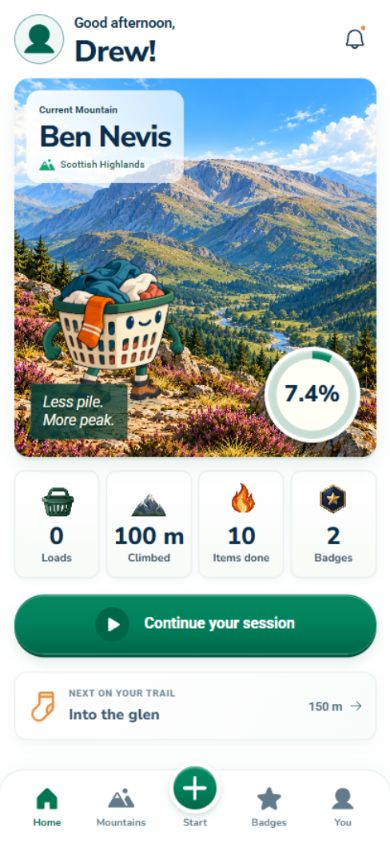
The Ben Nevis illustration is a keeper. The photographic-looking mountain icon, flame for total items and thin outline sock do not read as one icon family. Keep the primary action and progress hierarchy.
3 · Mountains
Keep
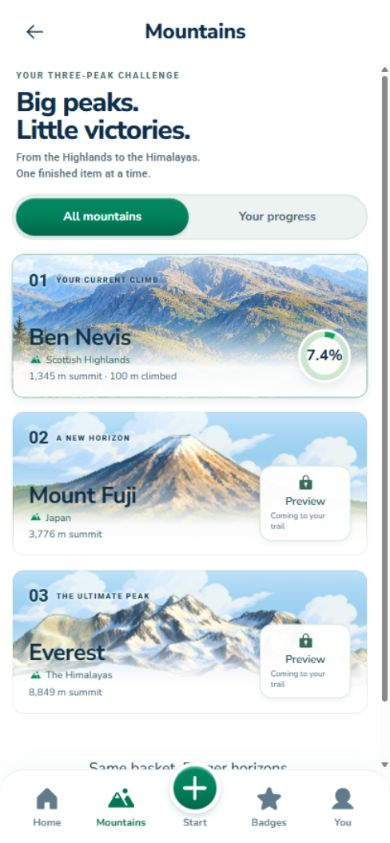
The three illustrated cards are clear and distinctive. Preserve this screen. A small basket greeting or card-entry motion could add life without competing with the destinations.
4 · Ben Nevis · climb
Composition polish
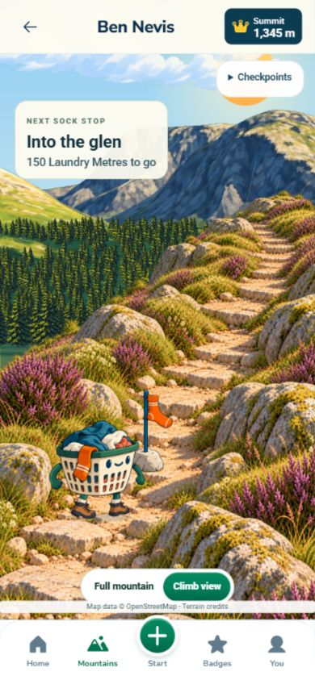
The foreground, distant mountain and sock have different scale and rendering cues. Use one trail camera, light direction and ground contact rule. The in-scene checkpoint label and separate Checkpoints control compete.
4 · Ben Nevis · overview
Scale polish
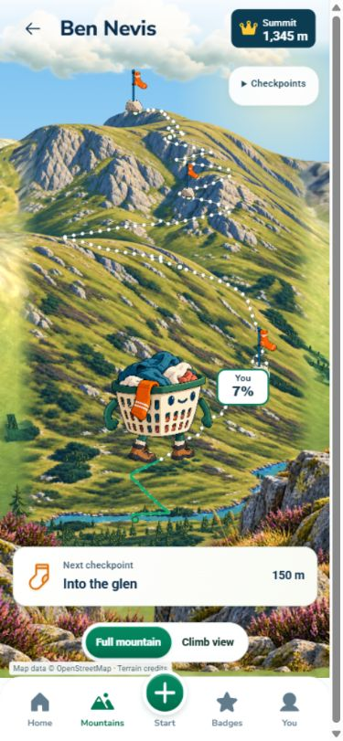
The large character reads as standing on a miniature mountain. Treat the overview as a map: a consistent player marker and legible checkpoint symbols; reserve the expressive large basket for close-up gameplay.
4 · Fuji · overview
Scale polish / preview only
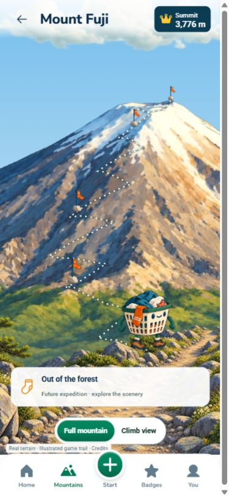
Terrain identity is clear. The remote socks become too small to read as game targets. Establish a minimum visible marker size without making their bases look like giant boulders.
4 · Fuji · climb
Composition polish / preview only
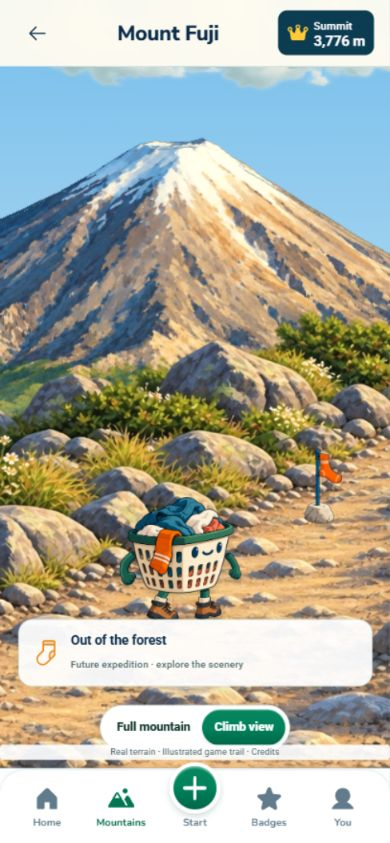
Basket, marker and foreground need the same camera and ground plane. Its information card differs from Ben Nevis. Carry one scene interface across all three mountains.
4 · Everest · overview
Scale polish / preview only
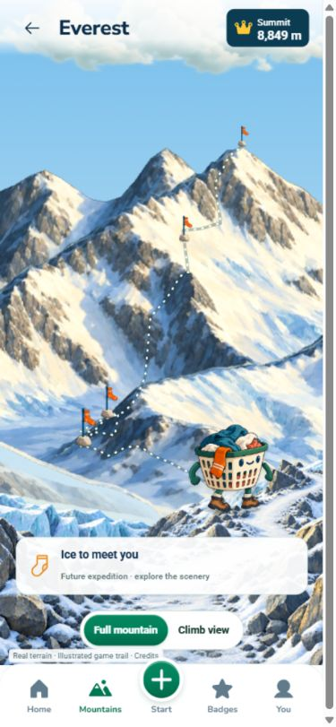
Distinct rock and snow palette works. Small markers and the oversized foreground player still mix map and close-up conventions.
4 · Everest · climb
Composition polish / preview only
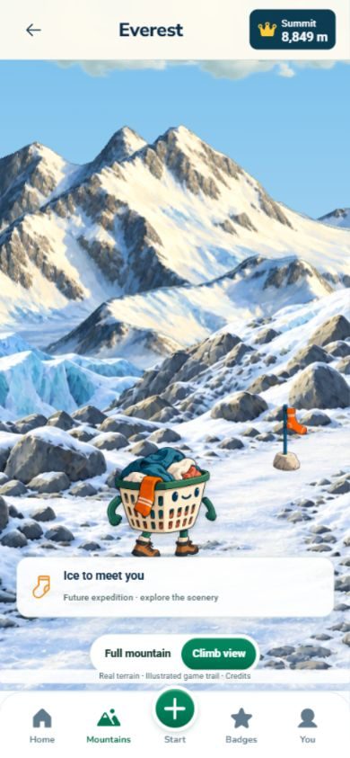
The sock looks like a small separate prop rather than a rewarding destination. Align its cloth, pole, base, shadow and distance with the basket and trail.
5 · Active session
Strengthen the main game moment
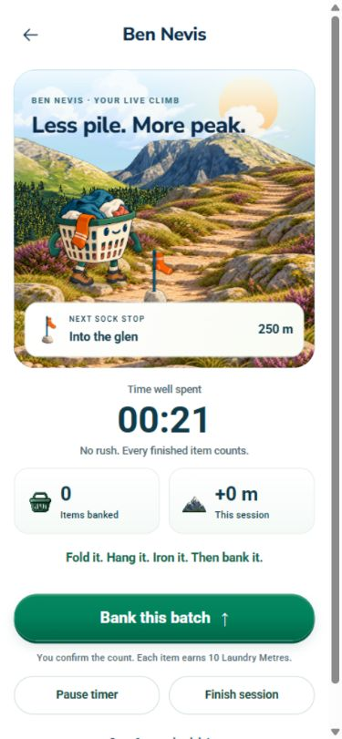
Simulated audit session, separate browser origin. Banking items is clear, but the scenery is constrained to a card and the front-facing pose repeats. Keep timer and controls clear; let the climb carry more of the visual story.
6 · Bank a batch
Keep / light polish
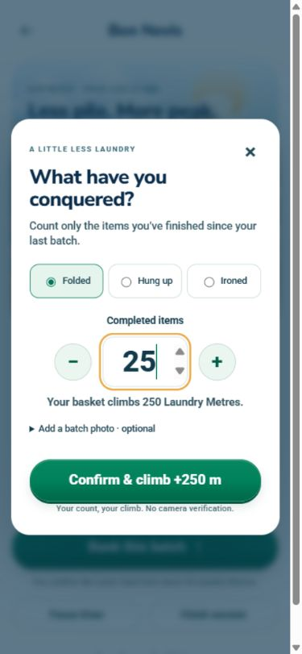
Simulated count of 25. The count, activity choice and metres are understandable. Use shared button/icon styling and shorter secondary copy. This is manual entry, not AI counting.
7 · Checkpoint reached
High-priority reward gap
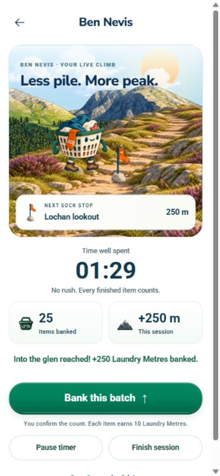
Simulated 25 items / 250 m. The status line announces the checkpoint, while the scene immediately labels the next one. A clear arrival beat is missing. The code has a short hop; screenshots do not prove motion quality.
8 · Session results
Keep structure / improve payoff
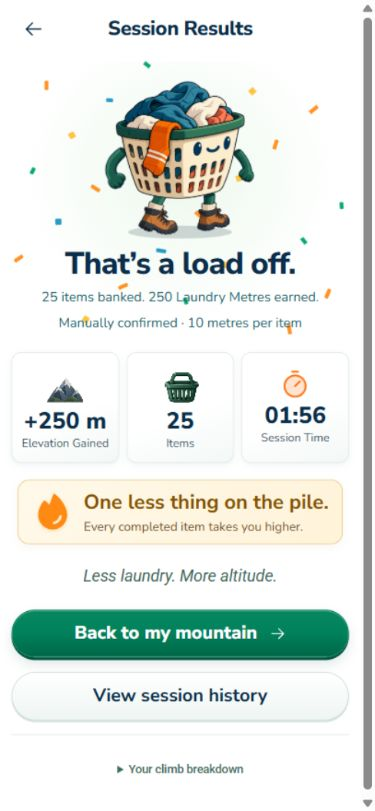
Simulated session. Mascot, confetti and totals already exist. Five badges were earned in this audit sequence but no new-badge reveal appeared. Show earned badge art and a concise next step; reduce repeated slogans.
9 · Badges
Keep artwork
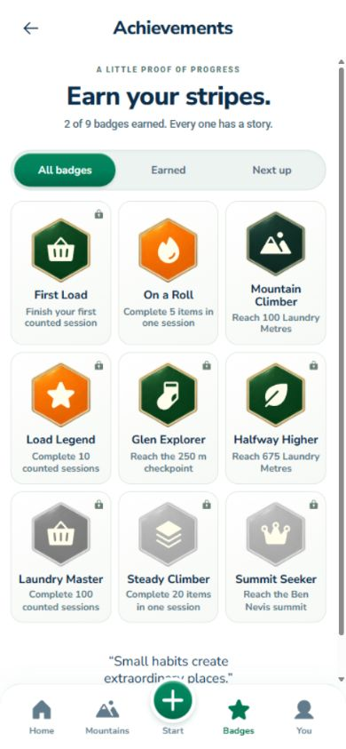
The badge artwork is a strong reusable asset. Locked and earned tiles can look too similar because some locked badges remain coloured. Make state and progress clearer without redesigning the badges.
9 · Badge detail
High-priority reward gap
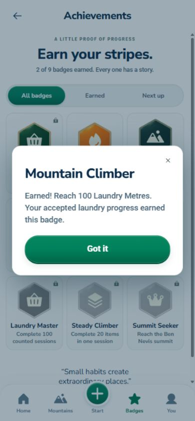
An earned badge opens as text only. Show the large badge itself, earned status and one short line. A first-time reveal should feel distinct from reopening an existing badge.
10 · Profile
Light polish
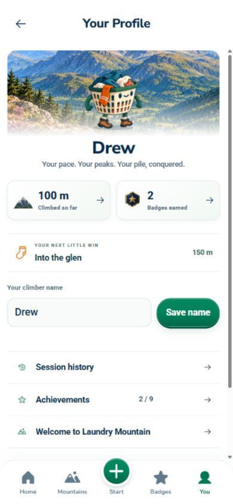
Clear name and progress summary; no need for another scenic redesign. Reuse the agreed icon family and checkpoint component, and give the mascot a resting rather than repeated walking pose.
10 · Session history
Light polish
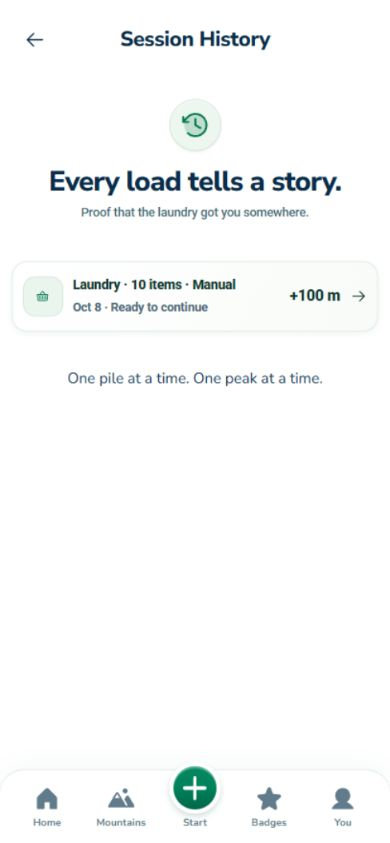
The real saved active session is visible. The sparse history is understandable; group entries and use a modest journal identity. Do not fill the empty space with arbitrary decoration.
Appendix · Camera setup
Parked
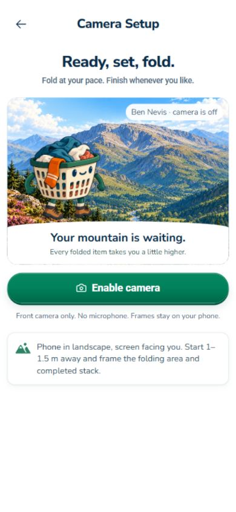
Camera-off state only. It is outside the selected manual demo path. Preserve it without investing in this prototype during the visual polish pass; no camera permission or physical test performed.
Responsive · Reported overlap
Confirmed defect
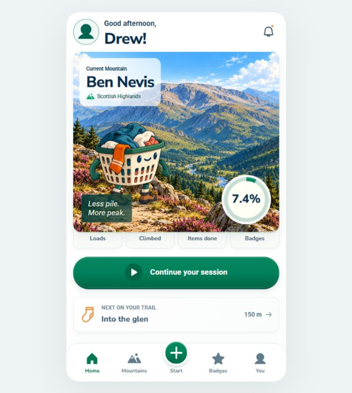
At 685 × 764, the card wrapper shrinks to about 261 px but its artwork remains 350 px high. Stats start before the artwork ends, hiding icons and totals. Fix the wrapper/scroll sizing contract, not the artwork.
Responsive · Narrow home
Confirmed defect
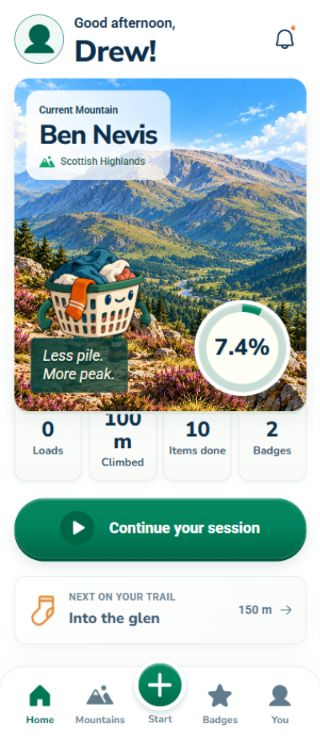
At 320 × 740 the same overlap hides the top of the stats. No horizontal overflow is required for this to fail: future checks must also detect element overlap and hidden content.
Responsive · Everest landscape
Composition polish
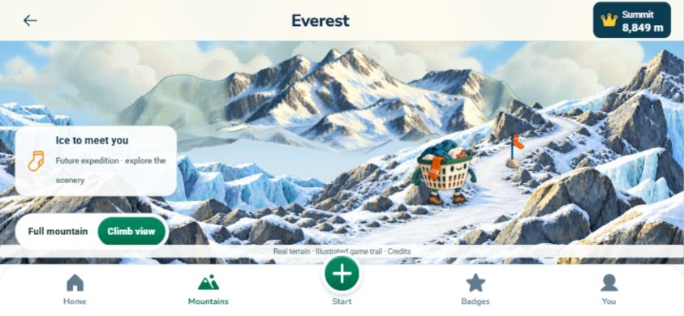
The layout fits but the large information box, credits strip and navigation compete with the scene. Preserve controls while giving the trail and checkpoint a clearer hierarchy.
Responsive · Session landscape
Good structure / scene polish
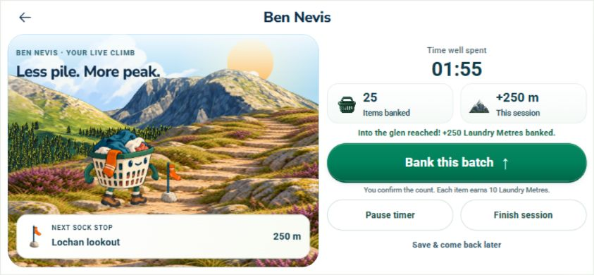
Simulated audit session. Side-by-side scene and controls are useful. Keep this layout; improve the shared scene, arrival feedback and icon family rather than redesigning the whole screen.
Evidence · Finished history
Observed
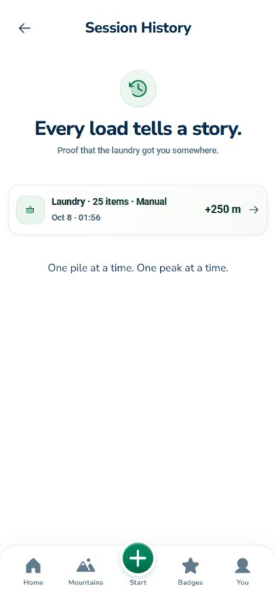
The separate simulated 25-item session appears in history. This is visual-flow evidence, not physical laundry verification.
Evidence · Newly earned badges
Observed
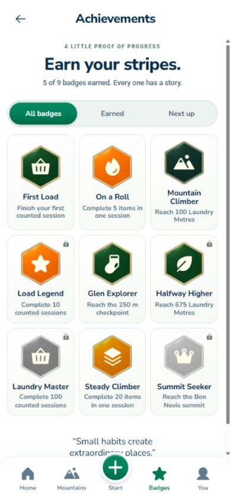
The separate simulated session shows five earned badges. This supports the finding that earned state exists but the first-time visual reveal is missing.
Evidence and limits
Captured 390 × 844 phone screens, the 685 × 764 reported layout, 320 × 740 narrow home and 844 × 390 landscape samples. Home card wrapper measured 261.2 px against 350 px child artwork at the reported size. Read-only inspection found five layered theme stylesheets, repeated checkpoint treatments, one basket angle with rigged walk/hop states, and no sound playback implementation or audio assets in src/public.
Observed browser navigation, badge detail open/close, and a separate simulated manual batch/session ending. Some screens scroll; captures show the visible viewport, not every off-screen row. No real-phone camera, physical counting, backend or full accessibility acceptance was performed. Small helper text and tiny locked-badge indicators are readability risks; contrast and assistive-technology compliance remain unmeasured. Motion timing quality was not recorded in this audit.